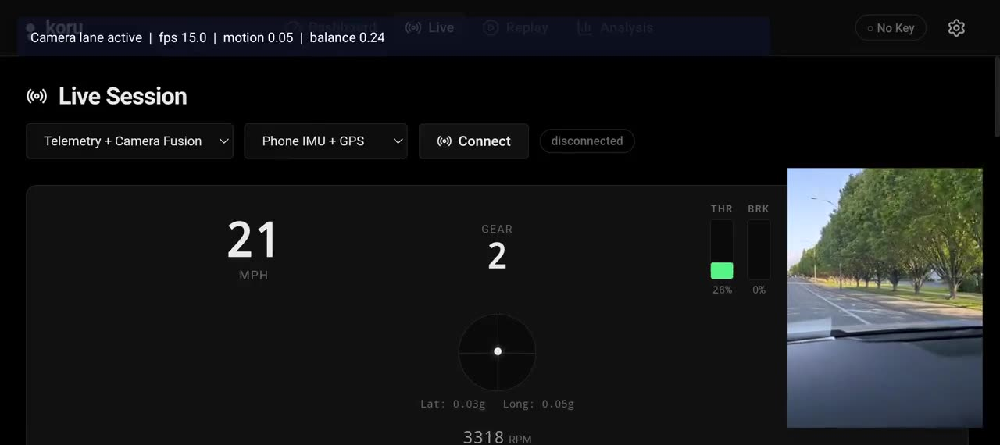

Today's best telemetry coaches (Garmin Catalyst) tell you what went wrong with numbers, after the fact. This system delivers context-aware coaching as it happens, adapted to driver skill, by routing every decision through a layered domain doctrine — Ross Bentley pedagogy, T-Rod's Sonoma session notes, and track-specific corner doctrine — before any LLM ever speaks. Gemini becomes a tool inside a trust framework, not the source of trust.
Two screen captures from the consolidated build. Telemetry is the master clock; the latest CameraX vision frame is fused onto each telemetry frame; the DEL shapes everything that comes out the speaker.
The consolidated build running on a Pixel device. Sonoma Raceway is selected as the deployed track; Telemetry + Camera Fusion mode is active with Phone IMU + GPS as the live telemetry source. Top status bar shows the vision lane active alongside motion and balance scalars derived on-device. Gauges, gear, RPM, throttle/brake bars, and the friction-circle G plot all update from the same fused frame. The DEL doctrine layer — Sonoma corners + T-Rod patterns + Ross pedagogy — is what suppresses, biases, and reshapes the coaching output you'd hear over audio.

▶ Trackless device test → Telemetry + Camera FusionThree pillars. The Domain Expertise Layer is the load-bearing one — without it, this is just another LLM wrapper.
Ross Bentley's 7 mental models + T-Rod's 5 Sonoma coaching patterns + corner-by-corner Sonoma doctrine. It is not prompt text — it actively suppresses premature advice, biases hot-path wording, and shapes feedforward per corner and per skill level. Doctrine, not decoration.
Hot path (12 deterministic rules, <50ms, no I/O). Cold path (gemini-2.5-flash-lite, 2–5s,
multi-frame, skill-adapted prompt). Edge reasoner (Gemma 4 E2B-it on-device). Feedforward (geofence,
150m before corner). The hot path NEVER waits for the cold path. P0 safety preempts everything,
including the LLM's turn to speak.
Timing state machine (OPEN → DELIVERING → COOLDOWN → BLACKOUT during apex). Driver model classifies skill from input smoothness. Bench-safe motion gating suppresses stationary false positives. Confidence thresholds gate every utterance. Silence is a feature.
Implemented in src/data/trackExpertise.ts, src/data/trodCoachingData.ts, and src/utils/coachingKnowledge.ts. Wired into the runtime selector, not just the prompt.
Pulled directly from pixel-android-app/app/build.gradle.kts, pixel-android-app/models/current-model.json, useGeminiCloud.ts, geminiService.ts, and coachingService.ts. Status reasoners are in com.trustableai.koru.runtime.reasoner.*.
| Layer | Component | Exact identifier | Where in code |
|---|---|---|---|
| On-device LLM tier 1 of cascade |
Gemini Nano 4 / Gemma 4 preview via Android AICore Prompt API | com.google.ai.edge.aicore.GenerativeModel |
runtime/reasoner/AiCoreReasoner.kt |
| On-device LLM tier 2 of cascade |
Gemma 4 E2B-it via LiteRT-LM (MediaPipe Tasks GenAI) | litert-community/gemma-4-E2B-it-litert-lm · file gemma-4-E2B-it.litertlm · sha256 ab7838cd…b27e42 |
runtime/reasoner/LiteRtLmReasoner.kt + ModelAssetManager.kt |
| On-device LLM tier 3 fallback |
Deterministic-only — phrase catalog + decision matrix, no LLM | Always available; chosen when AICore + LiteRT-LM both unavailable | runtime/reasoner/DeterministicOnlyReasoner.kt |
| Cloud cold path | gemini-2.5-flash-lite via REST v1beta |
https://generativelanguage.googleapis.com/v1beta/models/gemini-2.5-flash-lite:generateContent |
services/coachingService.ts:650 · services/geminiService.ts:30 |
| Post-session (deep) | gemini-3.1-pro-preview with ThinkingLevel.HIGH |
Lap comparison, sector-by-sector analysis | hooks/useGeminiCloud.ts:14,99–104 |
| Post-session (fast) | gemini-3-flash-preview with ThinkingLevel.LOW |
Faster cold-path enrichment | hooks/useGeminiCloud.ts:15,99–104 |
| TTS | gemini-2.5-pro-preview-tts via @google/genai v1alpha streaming |
responseModalities: [Modality.AUDIO] · WAV conversion in audioUtils.ts |
hooks/useGeminiCloud.ts:124–127 · hooks/useTTS.ts:83 |
| SDK | @google/genai 1.45.0 | One SDK, multiple Gemini surfaces (Pro, Flash, TTS) | koru-application/package.json |
| Android | MediaPipe Tasks GenAI 0.10.27 · CameraX 1.4.2 · WebKit 1.12.1 | Kotlin · minSdk 29 · compileSdk/targetSdk 35 · JVM 17 | pixel-android-app/app/build.gradle.kts |
| Web | React 19.2 · TypeScript 5.9 · Vite 8 · Tailwind 4 · Recharts · Papaparse | Vitest 4.1 · 13 test files | koru-application/package.json |
EdgeRuntimeManager.warmupPreferredBackend() probes each backend in order. The first one
that responds with a non-UNAVAILABLE / non-ERROR state becomes the active
reasoner; the choice is persisted to SharedPreferences so subsequent sessions don't re-probe.
Confidence scores per tier: AICore 0.78, LiteRT-LM 0.72, Deterministic
baseline.
com.google.ai.edge.aicore.GenerativeModel. Highest confidence (0.78). Supports HOT, FEEDFORWARD, EDGE paths.
.litertlm, sha256-verified). Loaded via MediaPipe tasks.genai.llminference.LlmInference. Pushed to /data/local/tmp/koru/models/gemma-4-e2b-it/ by npm run pixel:e2e:prepare.
Sensors fuse on-device. The DEL filters and shapes every output. Google components plug in as tools, not arbiters.
Five lenses on the same system. The DEL is upstream of all of them.
| Path | Latency | Backed by | Priority tier | What it does |
|---|---|---|---|---|
| Hot | < 50 ms | 12-rule DecisionMatrix + DriverModel · pure heuristics | P0 / P1 / P3 | Per-frame act-now coaching. No I/O, no network. Rules: OVERSTEER_RECOVERY, THRESHOLD, TRAIL_BRAKE, COMMIT, THROTTLE, PUSH, COAST, HESITATION, FULL_THROTTLE, EARLY_THROTTLE, LIFT_MID_CORNER, SPIKE_BRAKE. |
| Cold | 2–5 s | gemini-2.5-flash-lite via REST v1beta · skill-adapted prompt | P2 | Multi-frame physics analysis. Enriches future hot-path decisions; never blocks. Different prompt per skill (10 / 20 / 15-word ceiling). Called from coachingService.ts:650. |
| Feedforward | trigger | Geofence + Sonoma corner doctrine (T-Rod dossiers) | P1 | Anticipatory advice 150m before each corner. Wording shaped per-corner by T-Rod notes; suppressed when track expertise catalog says hold. |
| Edge reasoner | on-device | AICore (Gemma 4 preview) → LiteRT-LM (Gemma 4 E2B-it) → Deterministic | P1 / P2 | Adaptive live cues on Pixel 10 when no network. Three-tier cascade auto-warms; persisted to SharedPreferences. |
| Post-session | 5–30 s | gemini-3.1-pro-preview (HIGH) · gemini-3-flash-preview (LOW) | review | Sector-by-sector lap analysis with explicit ThinkingLevel; runs on saved session artifact, not live. |
| TTS | 50–200 ms | gemini-2.5-pro-preview-tts via @google/genai v1alpha streaming | output | Persona-flavored voice. generateContentStream with responseModalities: [AUDIO]; falls back to Web Speech API. |
Patterns that should be lifted to cohort level. The DEL pattern transfers across domains; the racing specifics don't.
VehicleDataStreamAbstract OBD/CAN/BLE behind one interface so the coaching engine never changes when upgrading from OBD to direct CAN bus. Ready for Team 2 (CAN-to-USB) and Team 3 (MoTec).
Per-corner metrics, mistake zones, coaching decisions. Codify the saved-session artifact so AGY pipeline ingestion is identical across all three teams.
P0 safety / P1 tactical / P2 strategic / P3 encouragement. Trivially portable across domains. Recommend the cohort adopt it for any real-time advisory work.
Sensor rates differ (8 Hz OBD vs 25 Hz RaceBox). Always store {time, value} pairs; trim by elapsed time. One decision eliminated an entire bug class.
Doctrine that filters and shapes LLM output is the trust mechanism. Any cohort domain (medical, fraud, ops) needs this layer between raw model and user.
Throttled synthetic stream so all teams can validate ingestion pre-field-test. Owned by Team 1. Standardizing on this unblocks pipeline development for everyone.
The six members behind this submission.
Mentors & doctrine sources (not Team 1 members): Ross Bentley (Speed Secrets author, Garmin Catalyst consultant — pedagogy); T-Rod / Tony Rodriguez (real Sonoma coaching session — track-specific patterns); Brian Luc (Edge mentor — "Feedback 800ms late is worse than silence").
Submitted by Team 1 (Beginner Pod). The full team is listed in the Team 1 section above.
Consolidated branch with native Android runtime, browser app, Sonoma doctrine, DEL, and 60 passing tests.
https://github.com/rabimba/trustable-ai-codelabOriginal ykro reference repo. Used for cross-checking against the cohort baseline.
https://github.com/ykro/trustable-ai-codelabComplete architecture document with ownership matrix and Mermaid diagrams.
docs/end-to-end-architecture.mdModule-level deep dive into the trust gates and DEL implementation.
docs/data-reasoning.mdPortable patterns for any real-time AI advisory system.
docs/learnings-real-time-data-reasoning.mdWhy the Team 1 working repo became the consolidation base, what was merged in, and from where.
docs/consolidation-report.md